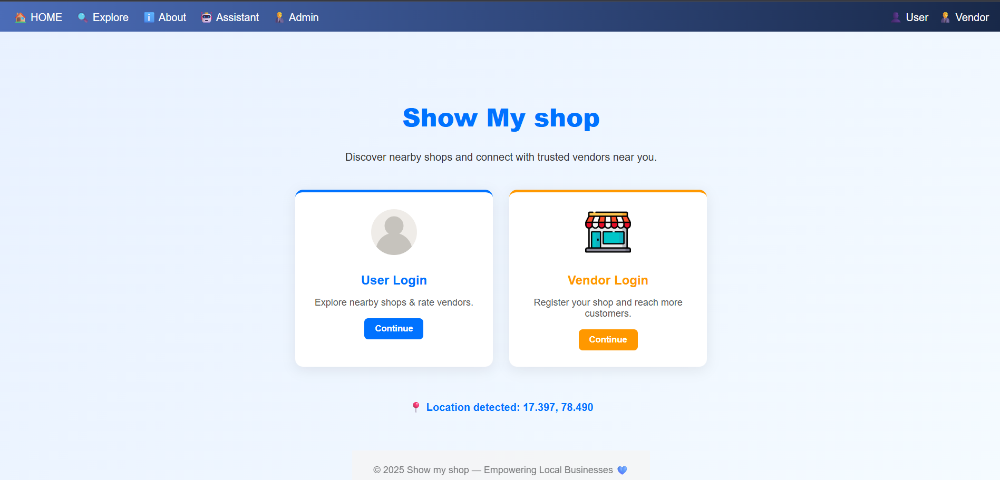
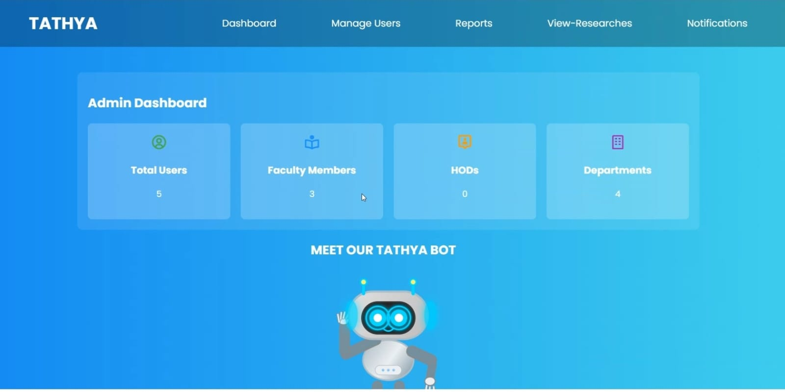

Computer Science undergraduate specialising in Data Analytics, with hands-on experience in
Python, SQL, Excel, and Tableau. Skilled in EDA, data cleaning, and translating findings
into actionable business insights. Quick learner with a keen interest in turning data into
meaningful decisions. Adaptable team player eager to grow analytical skills in a
professional environment.
📍 Hyderabad, India | 📧 priyairsan@gmail.com
Skills
- Programming & Databases: Python (Pandas, NumPy), SQL (Joins, Aggregations, Subqueries), MySQL, MongoDB
- Data Analysis & Visualisation: EDA, Data Cleaning & Transformation, Excel, Tableau, Matplotlib, Seaborn
- Machine Learning: Neural Networks (Keras/TensorFlow), CNN, RNN, LSTM, GRU
- Tools & Platforms: Git/GitHub, Jupyter Notebook, Google Colab, VS Code, REST API Integration

End-to-end pricing analysis on 676 retail products across 9 categories using Python, MySQL, Tableau, and Excel.
Identified 40%+ overpriced products vs competitors and flagged revenue leakage from underpriced high-demand items.
Built an interactive Tableau dashboard with KPI cards and monthly revenue trends across 2017–2018.
Tools: Python · MySQL · Tableau · Excel

End-to-end analysis of 8,807 Netflix titles using SQL, Python, Excel, and Tableau.
Wrote 15 MySQL queries for trend analysis and country-level breakdowns.
Published an interactive Tableau world map showing global content distribution.
Generated 7 visualisations uncovering content growth patterns using Seaborn and Matplotlib.
Tools: MySQL · Python · Excel · Tableau

Analysed user interaction logs from an AI-powered tutoring system to identify learner struggle points across 5 modules.
Built an analytics component to track individual learner progress and flag learning gaps early.
Designed a JSON-based data store to persist session-level performance history feeding into personalised quiz generation.
Tools: Python · Data Analytics · Google AI Agents · Kaggle

Built a hyperlocal commerce platform connecting users with nearby vendors and small businesses.
Implemented vendor registration, service listing, business updates, messaging, and reviews.
Designed for scalability with location-based search and personalised recommendations.
Tools: React.js · Node.js · MongoDB · Firebase

Developed a web-based faculty data management system aligned with NAAC and NBA accreditation standards.
Enabled secure role-based access with LMS/HR integration for real-time data sync.
Automated performance tracking via dashboards and streamlined accreditation reporting.
Tools: Web Technologies · Role-based Auth · Dashboard
-
- Excel Basics for Data Analysis — Coursera — ✅ Certificate
- Data Analytics Job Simulation — Forage x Deloitte — ✅ Certificate
- GenAI Powered Data Analytics Job Simulation — Forage x Tata — ✅ Certificate
- IBM Professional Data Analyst Certificate — In Progress
- SQL Data Associate Certificate (DataCamp) — In Progress
- What It Takes to Be a Data Analyst at Google — ✅ Certificate
- 5-Day AI Agents Intensive Program (Google × Kaggle) — ✅ Certificate
- Summer of AI Program — ✅ Certificate
- Summer of AI Program [Tech Lead] — ✅ Certificate
- 🏓 State-Level Table Tennis — Ranked 5th in Telangana, Cadet Category